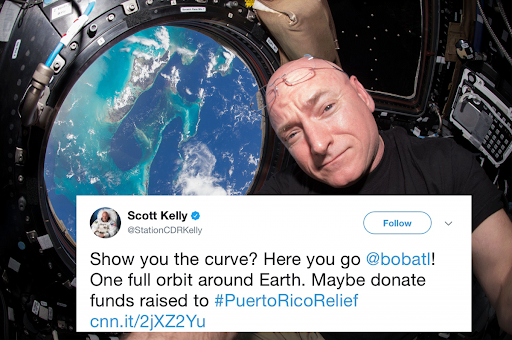

Are you serious?
Yes.
Everything we say is sincere. We genuinely believe that
there is
no way the earth is round.
Yes.
Everything we say is sincere. We genuinely believe that
there is
no way the earth is round.
While almost every religion shares a common worldview of a dome shaped earth, we have no official connection with any established religions. However, it would be impossible to deny the strong historical ties with Christianity by past Presidents of the Society (the most popular religion in the world).
There are several readily apparent proofs of the planets flatness.
The horizon always rises to meet eye level - which is impossible on
a ball earth. The surfaces of bodies of water has been shown to be
level. If the Earth was a Globe, this would not be the case. There
is no visible curvature to the horizon even from airplanes. We don't
even have a full shot of the Earth rotating from space! One almost
has to ask - is there any real evidence the Earth is a
Globe?
Our Library also has a great selection of books that
further detail proof of the planar Earth.
Visual proof! Its
all around us. Our eyes are enough. B.O.B. has photos to prove it
too! At least he used to until he
took the pictures down from Twitter and his GoFundMe.
There are a plethora of resources available that show us we can't
trust the photographic evidence from organizations such as NASA.
Some of the evidences that these should be discounted include
constant changes in their depiction of the Earth, inconsistent
lighting in moon footage, and other irregularities which are
discussed in depth by those who believe the Moon landing was a
hoax.
Obviously don’t trust anything the government puts out,
duh. There's no absolutely no way the government puts out true
information.
Most Flat Earthers think Astronauts have been bribed or coerced into
their testimonies. Some believe they have been fooled or are
mistaken.
Again, don’t trust the government. Jeez, how many
times do we need to keep telling you this?
There are three common explanations for this, but in the end without toppling the Planar Conspiracy there is no real way to know.
As evidenced by the logo of the United Nations the Earth is a round
disk of indefinite dimensions. The geographic North Pole is located
in the center of the disk, and the Antarctic lies around the outer
edges.

Or look at the United Nations logo! It's right in front of us and we as a society are blind!
Circumnavigation of the Earth is simply travelling a circular path
around the North Pole.
Obviously.
The radius of the sun's orbit around the Earth's axis symmetry varies
throughout the year, being smallest when summer is in the northern
annulus and largest when it is summer in the southern annulus.
Additionally it also raises and lowers. This causes the effect of
the sun appearing to move in a figure eight throughout a
year.
The sun simply illuminates only a portion of the earth at a time.
This also explains timezones as we can then see the path of the Sun,
a circle above the flat earth.
How do we know that the sun
is a
circle? Well, we assume what science is telling us is correct
because since is usually
correct, except when it goes against us.
No. Even if the Earth was a globe this would be an impossibility. We
have testimonies from several pilots saying that no curvature can be
seen at Commercial Airline heights. It has been suggested that
airplane windows serve to distort the view of passengers and make
them believe they see curvature when indeed there is none. This was
likely a ploy by early airline companies to sell more tickets.
Even though the Earth is very very very big, pilots say that
they can’t see the curvature, so the earth must obviously
be flat! And airline companies probably made the windows distorted
to see curvature to sell more tickets! This must mean
that airline companies such as Delta are also part of the scheme to
protect the truth as we mentioned above. Maintain
legitimacy. Hide the truth of the Bible. Denying the world of
Antarctic resources.
No. Actually Eratosthenes assumed the Earth was a globe to calculate
the circumference of the Earth. Taoists performed the same
experiment much earlier and came to the conclusion that the Earth
was Flat. This was independently conceived much later in the 1800's
by followers of Samuel Rowbotham.
Modern studies that we have
access to right now are just so unreliable that we went to studies
much further in the past.
While one can see satellites in the sky at night, it is generally
agreed upon that they are not actual satellites but pseudolites or
stratolites put there to fool us.
We are pretty sure that the
pictures of the Earth are just photoshopped, probably? And GPS was
created by Google because
they have a car that goes everywhere.
Gravity as a theory is false. Objects simply fall.
In the
flat earth community there are several theories as to why this
happens. Some attempt to explain this with use of mechanics like
electromagnetism, density, or pressure. Others make use of
traditional mathematics, such as the infinite plane model, and
others a new look at the problem - such as the non-euclidean
model.
What is certain is sphere earth gravity is not tenable
in any way shape or form.
Science can’t be trusted all
the time but we can trust parts of science that will work for us. We
pick and choose the
things that work best for us.
No. This is popular theory among some small groups to explain gravity, but it is problematic at best. The Earth Is Stationary. We are not whizzing about in space at 67,000 miles/hour or at speeds accelerating towards the speed of light, because once again, we only use science when it works in our favor. Also 67,000 miles/hour is much too fast! If we actually went at that speed, we would all faint from dizziness! Doesn’t matter how large the “round earth” is, that number is excessive.
Actually, it can shown that an infinite plane would be a more stable
form for gravity to pull things into. As mentioned above though,
sphere earth gravity is a lie. Many will attempt to say rain drops
form spheres due to gravity. Of course this is ridiculous - when
they do form spheres (which is a minority of the time) it is due to
surface tension.
The Flat Earth Society, along with previous notable flatists such as
Samuel Shenton and S. Rowbotham, believe there is no end to the
Earth and that it continues indefinitely. The only edge to the earth
is the one you are standing on. Some math describing this can be
found in our blog article The
Mathematics of an Infinite Earth.
It's like
Minecraft’s infinite terrain mechanism! The concept of flat earth is
all around us but we are too blind to
see.
This betrays a logical fallacy. Karl Popper relates it like this; you
may spend your whole life seeing only grey geese. This would lead
you to assume there were only grey geese. Of course the next day you
might wake up and see a white goose. Earth, in this analogy, is the
white goose.
We are a planet that is infinitely expanding
but we will accept the concept that other planets could be spheres
because
we feel like it. Also, they are above us anyways. Don’t trust
astronomy always.
The area where we live on the Flat Earth is encased within a
Dome, or Firmament. In some texts its also
referred to as The Vault of Heaven. Found in a very
surprising amount of religions and societies, the idea can be traced
to Babylonian, Sumerian, Egyptian, and Christian world-views, and
likely a great many more. Even some Native American tribes were said
to see the night sky like a tent. The stars? They were little holes
poked in the hide of the tent.
Although we use explanations
from people that didn’t have the advanced technologies like we do
today, it is valid to use
them. We can’t discount the experiences people in the past had
because we might be being lied to right now.
As a scientific
explanation
it serves very well. It was after all only with Copernicus that we
started to question the idea of the Firmament. By then we
already knew quite a bit about calculating and predicting the
movement of the heavens.